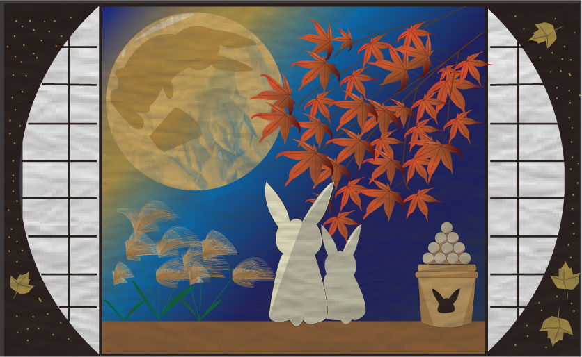
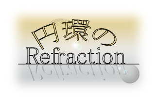

Illustrator
イラスト作品
季節のイラスト
訓練中の課題で作成しました。
中秋の名月が近かったためウサギ達のお月見をテーマに
和風の雰囲気が出るよう工夫しました。

季節のカレンダー
訓練中の課題で作成しました。
12月のカレンダーということでアドベントカレンダーを意識し、
平面ではなく立体的に作成しました。

我が家のペットたち
我が家のペット達のイラストを作成しました。
LINEスタンプの規格で作成しています。
（下の画像は他の画像の大きさに合わせるために縮小しています）

ロゴ作品
私の好きなゲームの曲名をお借りしてロゴを作成しています。
Black Out See Saw
Black out=光の消失 を白黒で表現し
「See」を黒文字にし重く、「Saw」を白文字とぼかしで軽く見えるようにしました。

Mystic Fragrance
黒と金を使い高級感を出し、Mystic=神秘的な を寒色と無彩色で表現し Fragrance=香り を暖色にすることでよい香りを感じられるようにしました。

円環のRfraction
Rfraction=反射 を鏡面に見立て
フレアツールで神々しい光も表現しました。
